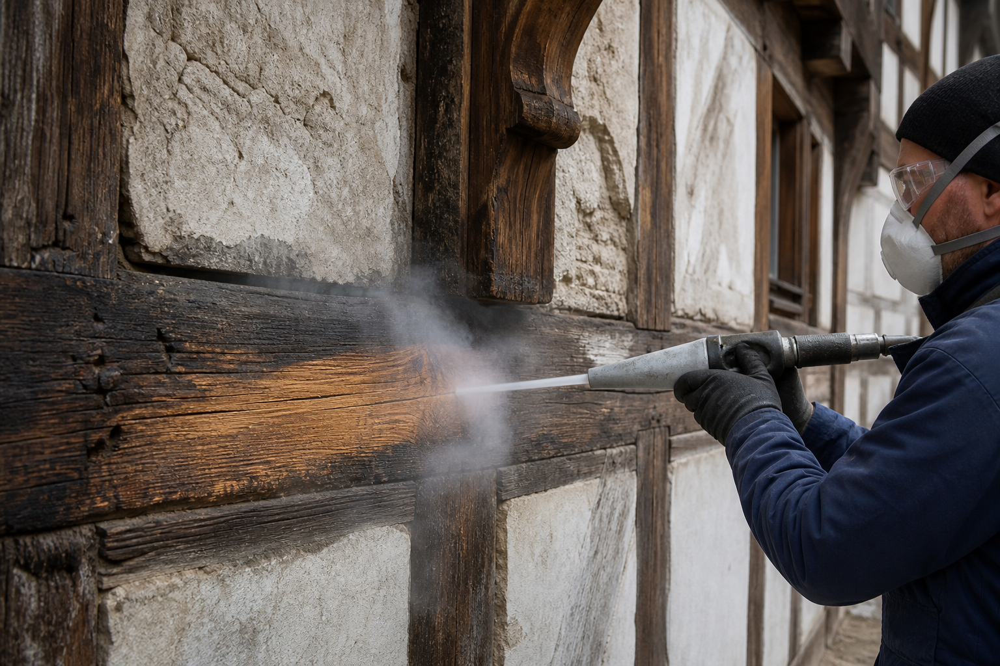

Trockeneis-Wissen · Denkmalpflege
Trockeneisstrahlen an Fachwerk: Schonende Denkmalpflege für historische Bausubstanz

Fachwerkhäuser gehören zu den empfindlichsten Bauwerken überhaupt, wenn es um Reinigung und Restaurierung geht. Jahrhundertealtes Holz, historische Farbschichten und Lehmausfachungen vertragen weder aggressive Chemie noch grobe mechanische Verfahren. Gerade in Thüringen, mit seiner reichen Fachwerktradition rund um Erfurt und Mühlhausen, stehen Eigentümer und Denkmalpfleger regelmäßig vor der Frage, wie sich historische Fassaden reinigen lassen, ohne die Substanz zu gefährden. Trockeneisstrahlen bietet hier eine Lösung, die Substanzschutz und gründliche Reinigung miteinander vereint.
Warum Fachwerk besonders empfindlich ist
Fachwerkhäuser bestehen aus einer Kombination unterschiedlichster Materialien, die jeweils eigene Anforderungen an die Reinigung stellen. Die tragenden Holzbalken sind oft über hundert Jahre alt, teilweise verwittert und in ihrer Struktur bereits geschwächt. Viele Balken tragen mehrere übereinanderliegende historische Farbschichten, die dokumentarischen Wert haben und nicht einfach abgetragen werden dürfen. Die Gefache zwischen den Balken bestehen häufig aus Lehm- oder Kalkputz, manchmal mit Flechtwerk als Untergrund, was diese Bereiche besonders empfindlich gegenüber Feuchtigkeit und mechanischer Belastung macht.
Hinzu kommt die statische Bedeutung des Holzes: Anders als bei einer reinen Fassadenverkleidung übernehmen die Fachwerkbalken tragende Funktionen. Jede Reinigungsmethode, die die Holzfaser schwächt oder Feuchtigkeit einbringt, gefährdet damit potenziell auch die Statik des gesamten Gebäudes.
Warum Sandstrahlen und chemisches Abbeizen riskant sind
Klassisches Sandstrahlen ist für Fachwerk denkbar ungeeignet. Das abrasive Strahlmittel trägt nicht nur die Farbschicht ab, sondern greift auch die Holzfaser selbst an. Bei altem, teilweise morschem Holz kann das dazu führen, dass weiche Frühholzbereiche stärker abgetragen werden als das härtere Spätholz, wodurch die charakteristische Balkenoberfläche unwiederbringlich zerfurcht wird. Chemisches Abbeizen birgt ein anderes, aber ebenso ernstes Risiko: Die Abbeizmittel dringen in die poröse Holzoberfläche ein und lassen sich oft nicht vollständig wieder entfernen. Rückstände können langfristig das Holz chemisch verändern, nachfolgende Beschichtungen beeinträchtigen und bei Lehmausfachungen zusätzlich unerwünschte Reaktionen auslösen.
Beide Verfahren haben zudem ein Feuchtigkeitsproblem: Chemische Abbeizmittel werden häufig auf Wasserbasis angesetzt oder erfordern eine Nachreinigung mit Wasser. Dieses Wasser kann tief in die Holzfaser und die Fugen zwischen Holz und Ausfachung eindringen und dort über Wochen gebunden bleiben, ein idealer Nährboden für Fäulnis und Holzschädlinge.
Wie Trockeneis alte Farbschichten und Ruß entfernt, ohne Wasser einzubringen
Trockeneisstrahlen arbeitet ohne ein zweites Strahlmittel und ohne Wasser. Die CO₂-Pellets sublimieren beim Aufprall unmittelbar, wodurch Farbschichten, Holzschutzmittel und Ruß durch den Kälteschock von der Oberfläche gelöst werden, ohne dass die Holzfaser selbst mechanisch abgetragen wird. Das Verfahren lässt sich zudem sehr präzise in Druck und Intensität steuern, sodass gezielt einzelne Farbschichten entfernt werden können, während darunterliegende, historisch wertvolle Schichten erhalten bleiben, wenn dies gewünscht ist.
Da keinerlei Feuchtigkeit eingebracht wird, entfällt das Risiko, dass Wasser in die Holzfaser oder in die Fugen zwischen Balken und Lehmausfachung eindringt. Das Holz bleibt trocken und wird nicht durch den Reinigungsprozess selbst geschädigt, was gerade bei bereits vorgeschädigten oder statisch beanspruchten Balken entscheidend ist.
So läuft die Reinigung eines Fachwerkgebäudes ab
- 01Bestandsaufnahme mit Denkmalpflege-Blick. Wir begutachten Holzzustand, Farbschichten und Ausfachungen und stimmen uns bei Bedarf mit Denkmalschutzbehörden ab.
- 02Schutz empfindlicher Bereiche. Lehmausfachungen, historische Farbfassungen und angrenzende Bauteile werden gezielt abgedeckt oder ausgespart.
- 03Kontrollierter Strahlvorgang. Mit niedrigem Druck und feinen Pellets wird Balken für Balken gereinigt, ohne die Holzfaser oder erhaltenswerte Schichten zu beschädigen.
- 04Dokumentation und Übergabe. Das Ergebnis wird fotografisch dokumentiert, was für spätere Denkmalschutz-Nachweise hilfreich sein kann.
Bei einem Fachwerkhaus reinigt man nicht nur eine Oberfläche, man bewahrt ein Stück Baugeschichte – das erfordert Zurückhaltung statt roher Kraft.
Relevanz für Denkmalschutz-Auflagen
Viele Fachwerkgebäude in Thüringen, gerade in historischen Altstädten wie Erfurt oder Mühlhausen, unterliegen dem Denkmalschutz. Das bedeutet in der Praxis: Reinigungs- und Restaurierungsmaßnahmen müssen mit den zuständigen Behörden abgestimmt werden, und es dürfen keine Verfahren eingesetzt werden, die die historische Substanz unwiederbringlich verändern. Da Trockeneisstrahlen weder abrasiv wirkt noch chemische Rückstände hinterlässt und sich in Druck und Intensität fein dosieren lässt, wird das Verfahren in der Restaurierungspraxis zunehmend als denkmalverträgliche Reinigungsmethode anerkannt. Es lässt sich zudem so steuern, dass einzelne, erhaltenswerte Farbschichten gezielt sichtbar bleiben, was bei einer restauratorischen Befunduntersuchung von großem Wert sein kann.
Vorteile im Überblick
- Holzfaser-schonend: Kein mechanischer Abtrag wie beim Sandstrahlen.
- Kein Chemieeintrag: Keine Rückstände, die ins Holz einziehen könnten.
- Kein Wasser: Kein Risiko für Fäulnis oder Feuchtigkeitsschäden im Holz.
- Präzise dosierbar: Einzelne Farbschichten können gezielt erhalten werden.
- Denkmalverträglich: Gut vereinbar mit Auflagen zur Substanzerhaltung.
Abstimmung mit Denkmalschutz und Eigentümern
Bei Fachwerkhäusern unter Denkmalschutz ist die Wahl des Reinigungsverfahrens oft nicht allein Geschmackssache, sondern Teil der behördlichen Auflagen. Da Trockeneisstrahlen weder chemische Rückstände hinterlässt noch die historische Holzsubstanz mechanisch abträgt, wird es von Denkmalschutzbehörden in der Regel als schonende und dokumentationsfähige Methode anerkannt. Vor Beginn der Arbeiten empfiehlt sich eine kurze Abstimmung mit der zuständigen Behörde sowie eine Probefläche, an der sich das Ergebnis vorab begutachten lässt, bevor die gesamte Fassade behandelt wird.
Warum Powertech Performance aus Erfurt
Powertech Performance unter Geschäftsführer Benjamin Lemmer hat sich auf schonende Reinigungsverfahren für sensible Bausubstanz spezialisiert, einschließlich historischer Fachwerkgebäude im Umkreis von 100 Kilometern um Erfurt. Wir kennen die Besonderheiten der Thüringer Fachwerkbauweise und arbeiten mit dem nötigen Fingerspitzengefühl, damit dein Fachwerkhaus gereinigt wird, ohne dass Substanz oder historische Farbfassungen verloren gehen. Auf Wunsch stimmen wir uns auch direkt mit Denkmalschutzbehörden oder Restauratoren ab.
Häufige Fragen zu Trockeneisstrahlen an Fachwerk
Warum ist Trockeneisstrahlen für Fachwerkhäuser geeignet?
Trockeneisstrahlen entfernt alte Farbschichten, Ruß und Schutzmittel, ohne Wasser oder Chemie in das historische Holz einzubringen. Das schützt die Holzfaser und verhindert Feuchtigkeitsschäden, die zu Fäulnis führen können.
Ist Trockeneisstrahlen mit Denkmalschutz-Auflagen vereinbar?
Ja. Da das Verfahren nicht abrasiv wirkt und keine chemischen Rückstände hinterlässt, wird es häufig bei denkmalgeschützten Fachwerkgebäuden eingesetzt und ist mit vielen Denkmalschutz-Auflagen vereinbar.
Warum ist Sandstrahlen bei Fachwerk riskant?
Sandstrahlen trägt die Holzoberfläche mechanisch ab und kann die empfindliche Holzfaser alter Balken dauerhaft schädigen. Auch chemisches Abbeizen birgt Risiken, da Rückstände in das Holz einziehen können.